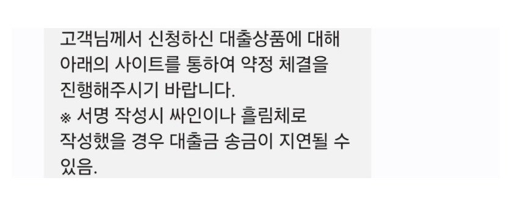

[개인회생자대출] 미납 과다, 근무기간 짧은 상태에서 김용혁이사님, 이현섭과장님께 큰도움받았습니다!
재직형태 : 정규직 4대
재직기간: 3개월
소득 : 연 4300
회생 36회차중 18회차 (8회미납)
기존대출 : 자동차담보 1030만
미납이 거의 8회가까이 있었고 미납금액이 500만원가량 이었어요 거기다 11월 입사자라 재직도 단기인 상황에서
뱅크앤론 김용혁 이사님, 이현섭과장님 통해 문의드려서 대출 성공 했어요
미납이 사실 11회가 되었어서 채권자로부터 폐지요청까지 와있는 상태였다가 급여받아서 겨우 8회까지 줄였지만 너무 미납회차가 커서 과연 대출이 가능할까 했는데 친절하게 상담해주시고
그대로 잘따라가니 미납500+ 여유자금 500으로 1000만원 대출 성공했어요

미납 다정리하고 여유자금이 조금더 필요한 상황이어서 다른 업체에 한번더 접수해주셨고
추가로 500만원 더 승인받았습니다^^
이틀동안 총 1500만원 성공했네요.
다른 업체에서는 미납이 너무 커서 다 완납하지않으면 어려울거라고 하셨는데 뱅크앤론에서 해결해주시네요
너무 감사합니다. 연체 없이 잘 상환하겠습니다!^^
https://cafe.naver.com/cityman88/310207